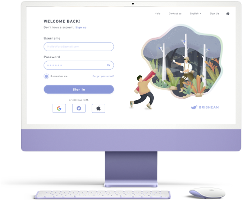

01

간편로그인을 통해 간편한 로그인이 가능한 사이트를 구현해보았습니다. 해당 사이트를 가입함으로 더 좋은 사이트를 경험할 수 있도록 사용자의 중점에서 생각하였습니다.
LoginAPI
02
그저 검색을 하는 사이트가 아닌 원하는 답을 찾을 수 있는 사이트를 구현하기 위해 자동완성 API를 구현해 보았습니다. 사용자들이 쉽게 사이트에서 원하는 답을 찾을 수 있도록 사용자의 관점에서 꼭 필요한 API라고 생각되어 구현하였습니다.

WEATHERAPI
03
지도는 우리의 일상 생활을 조금 더 윤택하게 할 수 있는 기능적인 요소라 생각합니다. 우리는 각종 지도 API를 구현하여 사용자들에게 더욱 친절하게 접근하고자 구현하였습니다.
Map viewAPI